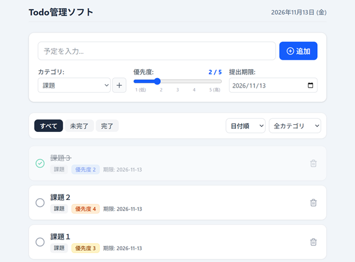
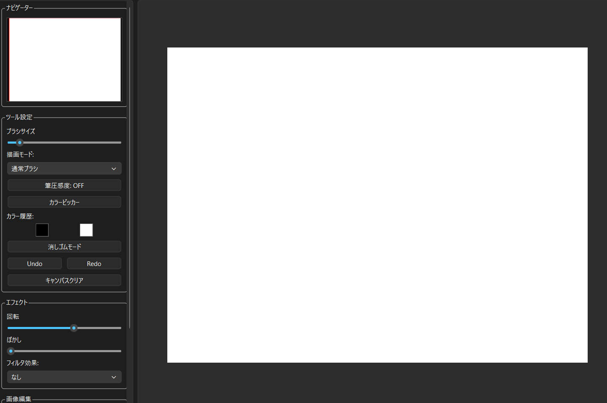
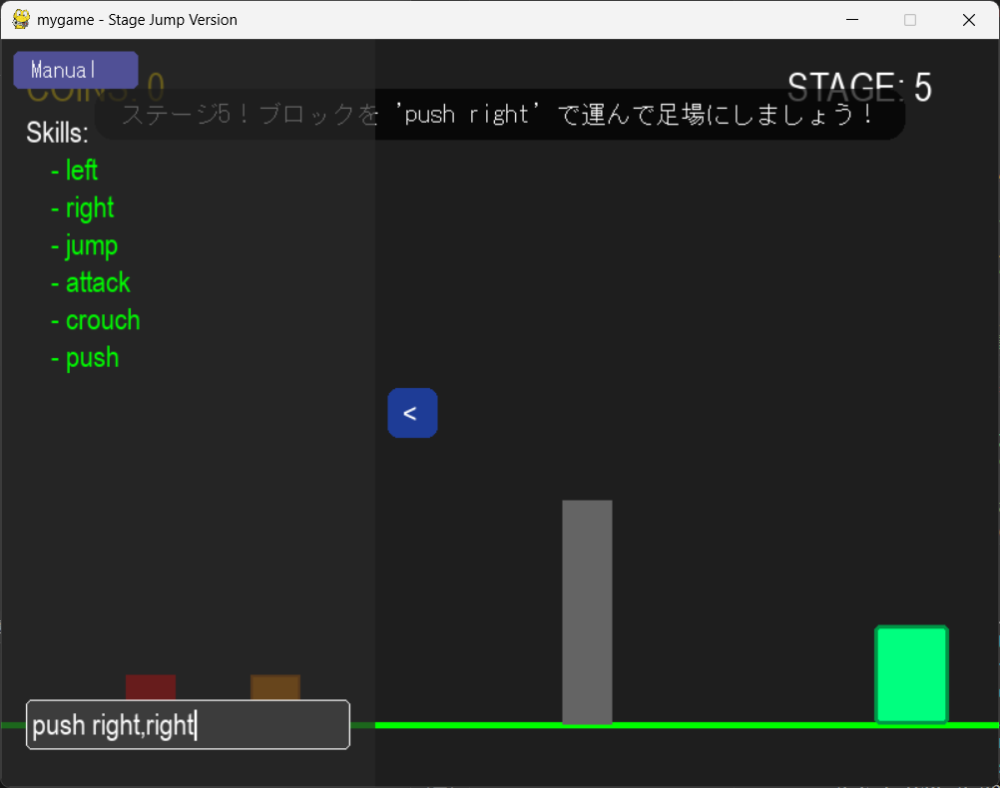
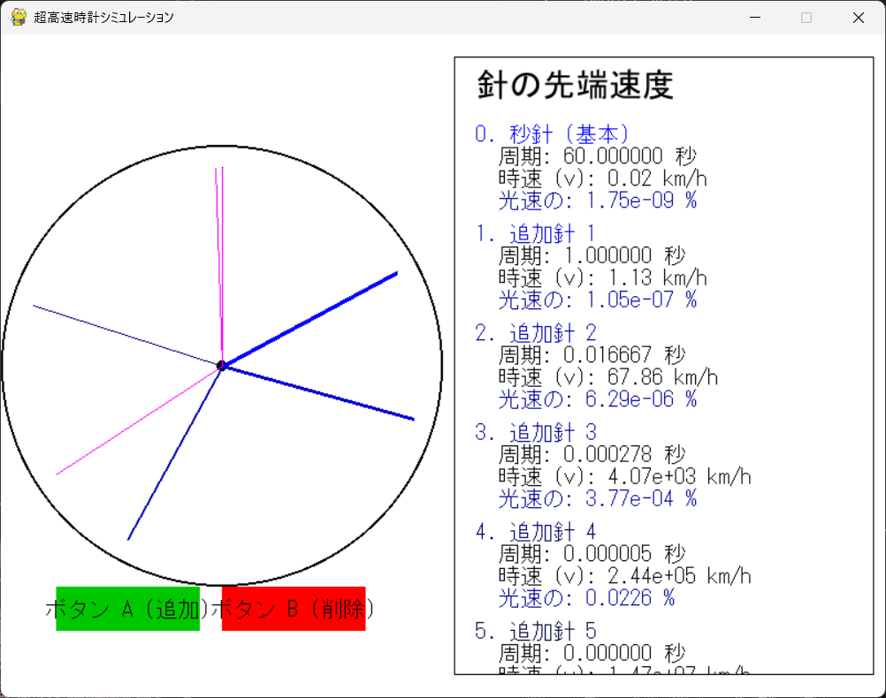
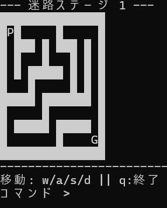
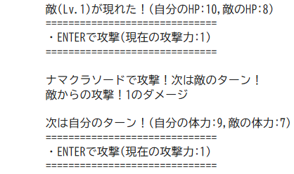

Todo App
GitHub ↗タスクの作成・完了管理・整理をシンプルに行えるタスク管理アプリケーション。日常の作業や学習タスクをスムーズに扱うためのUI・データ管理を実装。
大阪府出身。大阪公立大学工業高等専門学校 知能情報コース 2年。
Pythonを用いたデスクトップツール・Webアプリの実装やアルゴリズム開発、Unity (C#) によるゲーム制作に取り組んでいます。

タスクの作成・完了管理・整理をシンプルに行えるタスク管理アプリケーション。日常の作業や学習タスクをスムーズに扱うためのUI・データ管理を実装。

Python・OpenCV・PySide6で開発した軽量ペイントおよび画像編集アプリ。筆圧シミュレーションやアフィン変換による座標操作を実装。

テキストコマンドを入力してキャラクターを操作するサイドビューアクションゲーム。快適性を高めるためコマンド履歴や入力補完機能も実装。

時計の針を増やしていった際の先端速度を計算・可視化するシミュレーター。スライダーとボタンでパラメータをリアルタイムに操作可能（相対論は非考慮）。

「棒倒し法」アルゴリズムを用いた無限ステージ制の迷路探索ゲーム。ステージクリアごとに新しい迷路を自動生成。

Google Colaboratory上で動作するテキストベースRPG。戦闘、回復、装備強化などのゲームサイクルをオブジェクト指向の基礎を取り入れて構築。
ガソリン、灯油、軽油などの引火性液体の取り扱いおよび安全管理に関する国家資格。
可燃性ガス及び酸素を用いた金属の溶接・切断業務に関する労働安全衛生法に基づく技能講習を修了。
アーク溶接機の操作方法および感電防止等の安全衛生に関する特別教育・技能講習を修了。
常用漢字の読み書きと文章内での適切な運用能力を習得。
高校中級程度の英語理解力および表現力を習得。
経営戦略、情報セキュリティ、ネットワーク、AI・データ利活用などITに関する基礎知識を習得。
制作物に関するご質問やご連絡は、メールまたはGitHubよりお願いいたします。